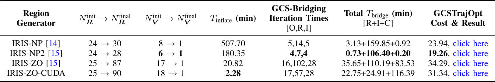
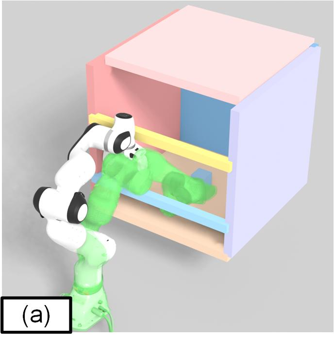
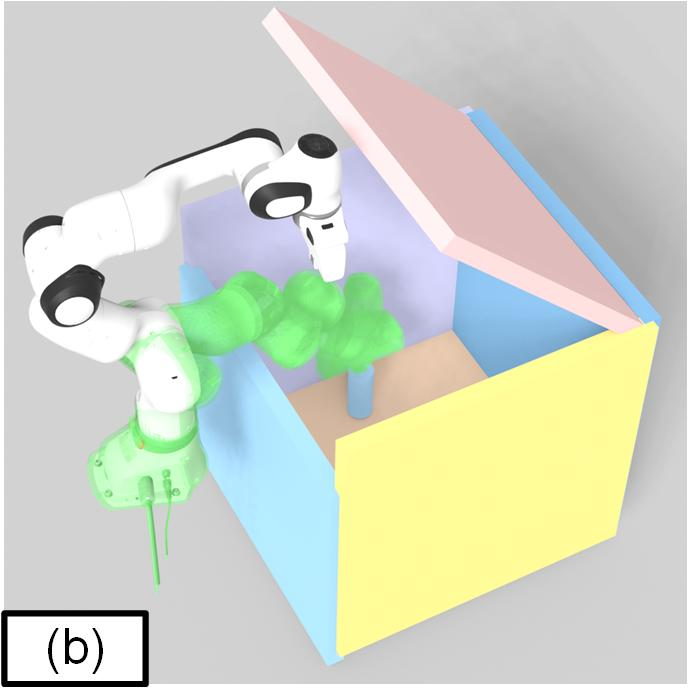
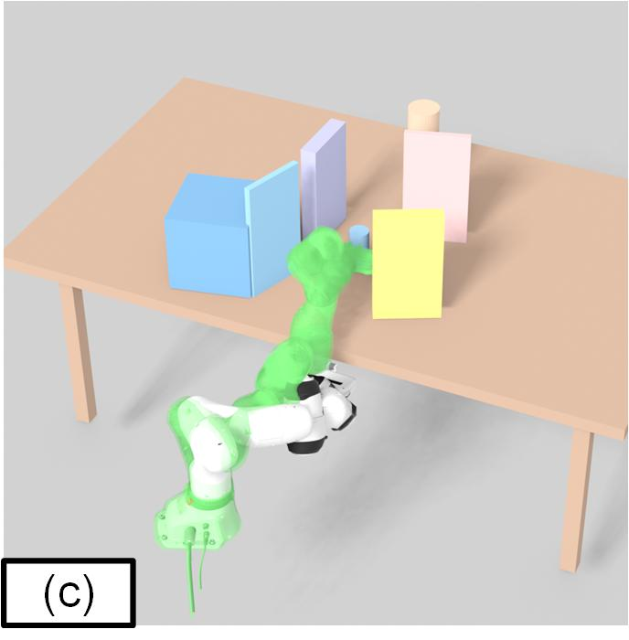
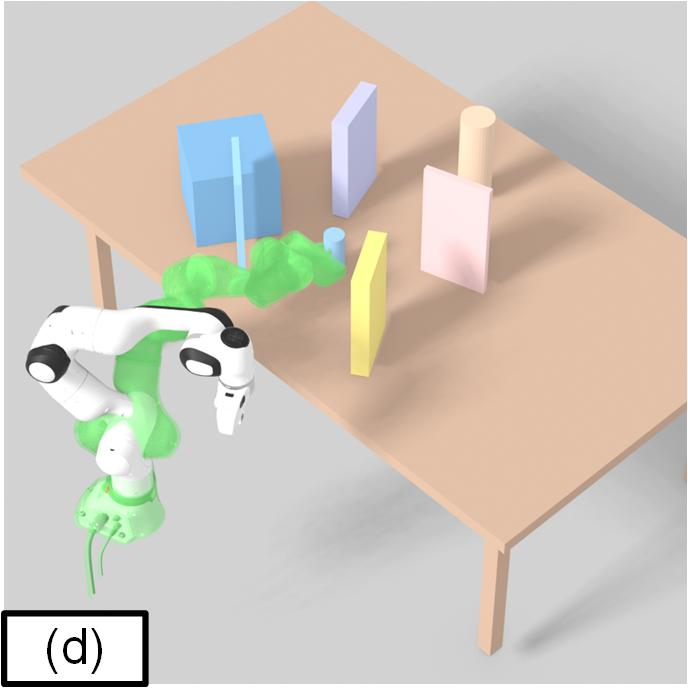
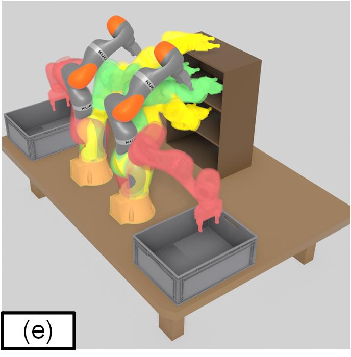
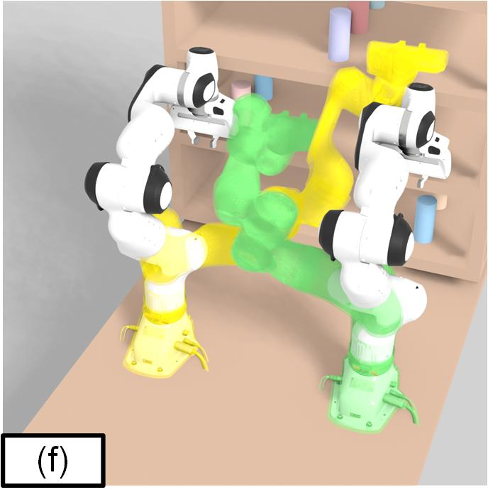
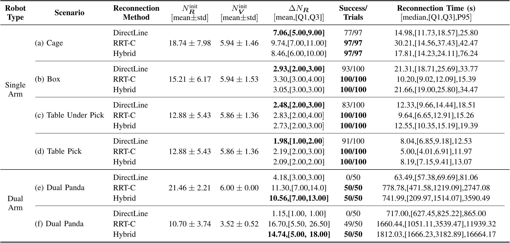

GCS-Bridging
GCS-Bridging: Restoring Connectivity of Disconnected Convex Sets for Graph-of-Convex-Sets Motion Planning

A conceptual illustration of GCS-Bridging in an abstract configuration space. (a) Initialization is first performed in a fully known environment using multiple IRIS-related algorithms. (b) An offline GCS map is then constructed, in which the regions containing the start and goal configurations may be disconnected. The connected components and the relationships among all regions are subsequently computed from the GCS map. (c) Based on the global connectivity information of the GCS map, the algorithm attempts to locally reconnect the closest regions pair while ensuring that the entire reconnection path remains collision-free. (d) BinaryInflation is then performed along the path; once the two disconnected regions are reconnected, only the shortest connection is retained.
Abstract
Graph-of-Convex-Sets (GCS)-based trajectory optimization represents collision-free regions in configuration space as a finite collection of convex sets and directly performs collision-free trajectory planning over these sets, substantially simplifying the planning process. However, existing GCS-based trajectory planning methods generally assume sufficient connectivity among the convex regions and do not explicitly address cases in which the start and goal regions belong to different connected components of the initial GCS map. To address this limitation, we propose GCS-Bridging, which reconnects disconnected convex regions through collision-free point paths followed by convex region reinflation, thereby recovering the feasibility of otherwise disconnected GCS planning problems. Extensive simulations across multiple IRIS-related algorithms and scenarios demonstrate that GCS-Bridging restores missing start-to-goal connectivity in the initial GCS map with a 99.8% success rate. In addition, a hardware experiment on a single-arm Franka platform in a real-world scenario with initially disconnected start and goal regions validates the effectiveness of the proposed method in practical motion planning.
Experimental Validation
Hardware Experiment
Click each result to open the interactive simulation or the full-size hardware recording.


Multiple IRIS Algorithm Comparison

GCS-Bridging demonstrates strong compatibility with all evaluated IRIS algorithms and successfully connects all start and goal configurations. This performance is primarily attributed to the suitability of RRT-C piecewise-linear paths for IRIS inflation and the ability of local RRT-C to improve overall graph connectivity. Nevertheless, challenges remain. The computational cost of GCS-Bridging strongly depends on the connectivity of the initially generated graph. For IRIS-ZO and IRIS-ZO-CUDA, an excessive number of connected components in the initial GCS map substantially increases both the computational cost of $\mathrm{LocalRRTC}$ and $\mathrm{BinaryInflation}$ and the final optimization cost. This can be attributed to 2 factors. First, the faster IRIS-ZO and IRIS-ZO-CUDA algorithms generate relatively small convex regions. These small regions result in poor connectivity of the initial GCS map, requiring additional regions and producing a more fragmented feasible space. Consequently, the fully connected graph provides less flexibility for convex relaxation, leading to increased GCSTrajOpt cost. Second, because each $\mathrm{BinaryInflation}$ process inflates only 8 regions, unsuccessful connectivity after a single inflation batch requires repeated regions connectivity evaluations. The regions connectivity computation in IRIS involves numerous optimization problems, while each region contains a large number of facets, further increasing the connectivity-checking time, as particularly evident in the IRIS-ZO and IRIS-ZO-CUDA results.
Multiple Scenarios Comparison
Click each scenario to open its interactive result. The destination pages are currently placeholders.







Across all scenarios, $\mathrm{DirectLine}$ achieves an overall success rate of 69.2%, compared with 99.8% for pure RRT-C and 100% for the hybrid strategy. Specifically, the Table above shows that DirectLine achieves acceptable success rates in low-dimensional scenarios but degrades in geometrically complex or high-dimensional environments, such as Cage and the dual-arm scenarios. In contrast, RRT-C-based GCS-Bridging and the hybrid strategy achieve consistently higher success rates due to the effectiveness of RRT-C in high-dimensional C-space. Their overall performance is comparable in both success rate and computation time, while the shorter runtime of pure RRT-C in some single-arm cases is primarily attributed to GPU acceleration. The hybrid strategy is therefore retained as a practical CPU-based option for low-dimensional scenarios. The substantially higher computation time observed for Dual Panda is mainly caused by its more complex collision model, which uses 66 spheres, compared with only 13 spheres for the simplified KUKA iiwa model.
Conclusion
In this work, we propose GCS-Bridging, a multi-region reconnection method for infeasible GCS planning problems based on joint-space Graph of Convex Sets construction and RRT-C. GCS-Bridging connects convex regions from different connected components in ascending order of their high-dimensional distances using either RRT-C or a hybrid strategy that applies DirectLine before RRT-C, followed by convex region inflation. This enables GCS search and planning in configuration spaces with incomplete connectivity. The method is evaluated in an identical scenario initialized by different IRIS algorithms and in 6 randomized initially disconnected planning scenarios. Experimental results show that pure RRT-C-based GCS-Bridging achieves a 99.8\% success rate , while the hybrid strategy achieves 100\%. GCS-Bridging is further deployed on a 7-DoF single-arm robotic system, demonstrating that GCS-Bridging restores feasible GCS motion planning on a single-arm Franka Panda system.
Citation
@article{zhou2026gcsbridging,
title = {GCS-Bridging},
author = {Zhou, Xiaokai and ...},
year = {2026}
}